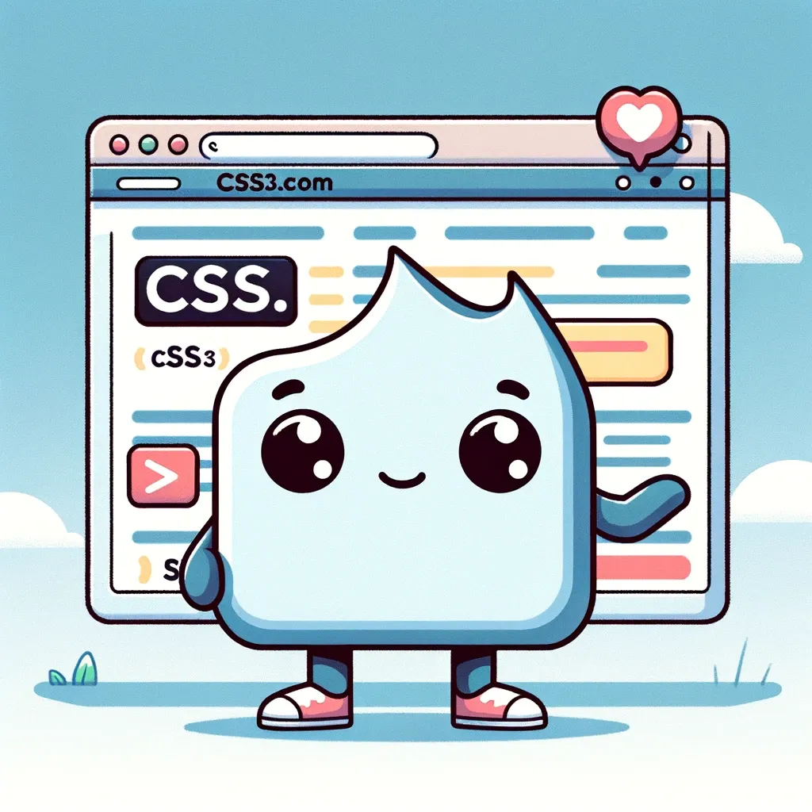
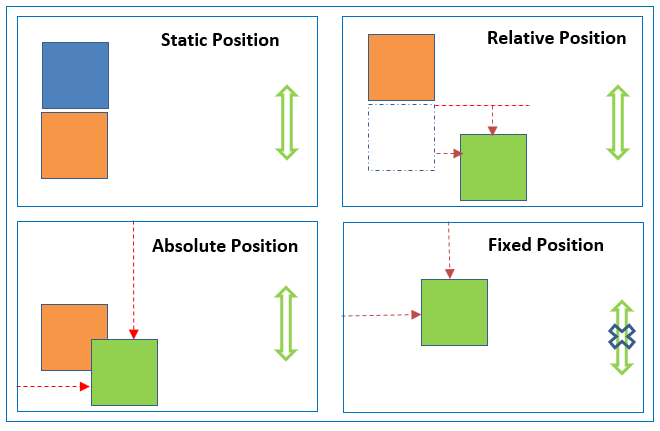
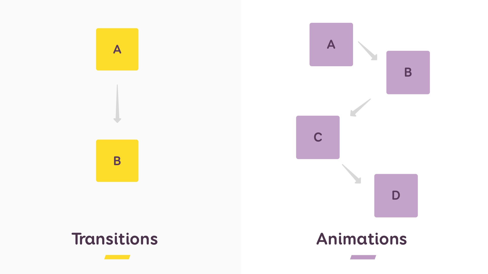

Bitacora unidad 2
DISPLAY
ideas
Notas
la propiedad display en CSS es mucho más que una simple herramienta para mostrar u ocultar elementos, define cómo se estructura y organiza el contenido en una página web. tambien la forma en que los elementos se comportan, interactúan entre sí y se adaptan a diferentes tamaños de pantalla, la funcion display implica comprender las diferencias entre los tipos de cajas block, inline e inline-block, así como el potencial de los contenedores flexibles con flex y las cuadrículas con grid, igual permite no solo controlar la presentación visual de los elementos, sino también crear interfaces de usuario dinámicas, responsivas y atractivas. Desde la disposición básica de párrafos e imágenes hasta la construcción de layouts complejos y sofisticados, display se erige como una propiedad esencial en el arsenal de cualquier diseñador web que busque un control preciso y una flexibilidad total en la creación de sitios web modernos.

Resumen
La propiedad display en CSS es esencial para controlar la forma en que se muestran los elementos en una página web. No solo define si un elemento se comporta como un bloque que ocupa todo el ancho disponible o como un elemento en línea que solo ocupa el espacio necesario, sino que también determina cómo interactúa con otros elementos en el diseño. display permite establecer diferentes tipos de renderizado, como inline-block, que combina características de ambos, o none, que oculta el elemento por completo. Además, display juega un papel crucial en la creación de diseños complejos, ya que permite definir contenedores flexibles con flex y cuadrículas con grid, abriendo un abanico de posibilidades para organizar el contenido de forma dinámica y adaptable. En resumen, display es una herramienta fundamental para cualquier desarrollador web que busque un control preciso sobre la presentación visual y el diseño de su sitio.
CSS3
Ideas
Notas
CSS3 ofrece una serie de características que son importantes en el diseño web los selectores avanzados permiten una selección más precisa de los elementos facilitando la aplicación de estilos sin necesidad de clases o id, adicionales el diseño responsive se vuelve crucial con las ‘’media queries’’ que adaptan el diseño a diferentes dispositivos y tamaños de pantalla flexbox crea layouts flexibles que se ajustan al espacio disponible y grid layout permite crear layouts bidimensionales complejos con facilidad los efectos visuales también son protagonistas con sombras para elementos y texto bordes redondeados degradados transiciones suaves animaciones personalizadas transformaciones 2D y 3D y filtros para modificar la apariencia de las imágenes la tipografía se enriquece con web fonts y la posibilidad de importar fuentes externas además CSS3 permite usar fondos con imágenes y vídeos y distribuir el texto en columnas con multi-column layout en resumen CSS3 ofrece herramientas poderosas para crear sitios web visualmente atractivos dinámicos y adaptables

Resumen
Hoy aprendí sobre las novedades que trajo CSS3 al diseño web. Me impresionó la flexibilidad que ofrece para crear sitios web dinámicos y visualmente atractivos. Los selectores avanzados permiten una selección más precisa de los elementos, mientras que las media queries, flexbox y grid layout hacen posible la creación de sitios web responsive que se adaptan a cualquier dispositivo. Además, CSS3 ofrece una gran variedad de efectos visuales como sombras, bordes redondeados, degradados, transiciones y animaciones. También me gustó la posibilidad de usar web fonts y fondos con imágenes y vídeos. Definitivamente, CSS3 es una herramienta fundamental para cualquier desarrollador web que busca crear sitios web modernos y atractivos.
POSITION
Ideas
Notas
El position es clave para controlar la ubicación de los elementos en una página web existen diferentes tipos de posicionamiento static que deja el elemento en su lugar natural dentro del flujo del documento relative que permite mover el elemento respecto a su posición original usando top, right, bottom y left sin afectar a los demás elementos absolute que saca al elemento del flujo normal y lo posiciona en relación a su ancestro más cercano que esté posicionado ideal para crear layouts más complejos fixed que fija el elemento a la ventana del navegador como si fuera un sticker que siempre se ve perfecto para barras de navegación y sticky una mezcla de relative y fixed donde el elemento se comporta como relative hasta que llega a cierto punto y se vuelve fijo también aprendí sobre z-index que me permite controlar qué elementos se ven encima de otros como si los apilara. Position es esencial para crear diseños web más dinámicos y con elementos que se comportan de manera diferente.

Resumen
La propiedad position en CSS es fundamental para controlar la ubicación de los elementos en una página web. Ofrece distintos tipos de posicionamiento: static (posición natural), relative (movimiento relativo a su posición original), absolute (posicionamiento en relación a su ancestro posicionado), fixed (fijación a la ventana del navegador) y sticky (combinación de relative y fixed). Además, z-index permite controlar el orden de apilamiento de los elementos. position es esencial para crear diseños web dinámicos y con elementos que se comportan de manera diferente.
ANIMACION CSS3
Ideas
Notas
@keyframes para definir los fotogramas clave, como si estuviera creando una pequeña película, y la propiedad animation para controlar la duración, la repetición y otros aspectos de la animación, se pueden lograr demasiados efectos, desde sutiles transiciones hasta complejas, hover effects, animaciones de carga y transiciones de texto, usarlas con moderación y propósito, evitando la sobrecarga visual y asegurando que las animaciones sean fluidas y accesibles, son una herramienta poderosa para crear sitios web más dinámicos e interactivos, la animation configura duración, repetición, etc, son una herramienta poderosa para captar la atención del usuario, transition crea transiciones suaves entre diferentes estados de un elemento, para mpverlo de sitio tambien funciona, el hover efect con pasar el raton esta se activa, se puede cambiar el color, tamaño y posion, usar con moderacion porque puede explotar la pc.

Resumen
Las animaciones CSS3 ofrecen una amplia gama de posibilidades creativas, desde efectos sutiles como hover effects y transiciones de texto hasta animaciones más complejas como animaciones de carga, desplazamiento y personajes. También permiten crear efectos de paralaje, transiciones de página creativas y microinteracciones que mejoran la experiencia del usuario. Es importante utilizar las animaciones con moderación y propósito, evitando la sobrecarga visual y asegurándose de que no interfieran con la accesibilidad del sitio web o que le explote el ordenaron al usuario. las animaciones deben complementar el diseño y la funcionalidad del sitio, guiando la atención del usuario y proporcionando feedback visual claro. En resumen, las animaciones CSS3 son una herramienta versátil y eficaz para mejorar la experiencia del usuario y crear sitios web más atractivos y dinámicos. Su uso responsable y creativo puede marcar la diferencia en la forma en que los usuarios interactúan con el contenido y perciben el sitio web.
Ref.Avanzadas CSS3
Ideas
Notas
son selectores de clase para elementos con un atributo de clase específico, y selectores de id para elementos con un id único, también existen selectores de atributos que se basan en la presencia y valor de los atributos, las pseudoclases seleccionan elementos según su estado o posición, como :hover para elementos al pasar el ratón por encima, o :nth-child para seleccionar elementos hijos específicos. Los selectores de relación seleccionan elementos según su relación con otros, como hermanos o hijos directos. La combinación de selectores permite una selección más precisa. La especificidad determina qué regla CSS se queda cuando varias coinciden con un elementoLos selectores de relación permiten seleccionar elementos en función de su relación con otros elementos en el árbol DOM. + selecciona el elemento hermano inmediatamente posterior a un elemento dado, ~ selecciona todos los hermanos posteriores, y > selecciona solo los hijos directos de un elemento.

Resumen
La combinación de diferentes tipos de selectores permite crear selecciones muy específicas y complejas, adaptándose a las necesidades de diseño de cada página web. La especificidad de un selector determina qué regla CSS se aplica cuando varias reglas coinciden con el mismo elemento. En general, los selectores más específicos tienen prioridad sobre los menos específicos, las pseudoclases permiten seleccionar elementos en función de su estado o posición en el documento. :hover selecciona un elemento cuando el usuario pasa el ratón por encima, :first-child selecciona el primer hijo de un elemento padre, y :nth-child(odd) selecciona todos los hijos que ocupan una posición impar.